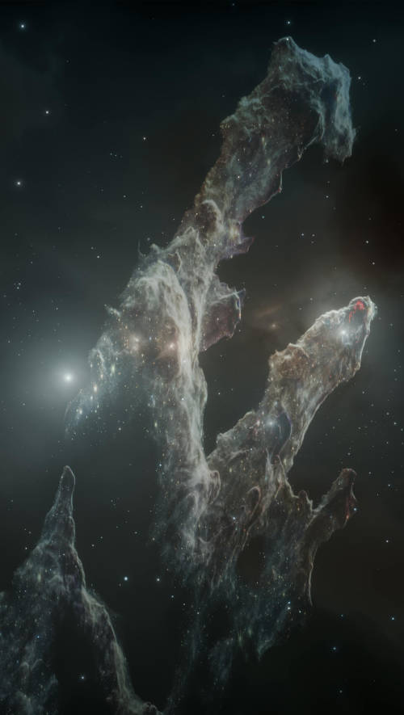

PILARES DA CRIAÇÃO: UM ESTUDO CIENTÍFICO SOBRE SUA FORMAÇÃO E IMPORTÂNCIA
Os "Pilares da Criação" são uma das imagens mais icônicas da astronomia moderna, capturadas pelo Telescópio Espacial Hubble em 1995. Essas estruturas situam-se na Nebulosa da Águia (Messier 16 - M16) e consistem em gigantescas colunas de gás e poeira interestelar. Este artigo tem como objetivo discutir a composição, o processo de formação e a importância dessas estruturas para a astrofísica.
Estrutura e Composição dos Pilares da Criação
Os Pilares da Criação são compostos predominantemente por hidrogênio molecular e poeira interestelar. A interação desses materiais com intensas radiações ultravioleta emitidas por estrelas jovens e massivas próximas resulta na formação de regiões de ionização. As densas colunas de gás atuam como berçários estelares, onde novas estrelas podem se formar a partir do colapso gravitacional do gás e poeira.
Processo de Formação e Evolução
Os pilares foram formados por meio da compressão de gás e poeira interestelar devido à radiação de estrelas massivas. Esse processo, conhecido como foto evaporação, faz com que as regiões menos densas da nuvem sejam dissipadas, enquanto as regiões mais densas permanecem, formando estruturas alongadas. Com o tempo, a radiação e os ventos estelares das estrelas massivas próximas podem destruir essas estruturas, dispersando o material no meio interestelar.
Os Pilares da Criação são fundamentais para o estudo da formação estelar. Eles fornecem dados sobre a interação entre radiação estelar e nuvens de gás, ajudando a compreender os mecanismos que regulam a formação de estrelas. Além disso, observações em diferentes comprimentos de onda, como as realizadas pelo Telescópio Espacial James Webb, permitem uma análise mais detalhada da composição e dinâmica dessas estruturas.
Os Pilares representam um dos fenômenos mais fascinantes da astronomia moderna. Seu estudo contribui significativamente para o entendimento da formação estelar e da evolução de nebulosas. Com os avanços tecnológicos em observação astronômica, futuras pesquisas podem revelar informações ainda mais detalhadas sobre esses verdadeiros monumentos do cosmos.